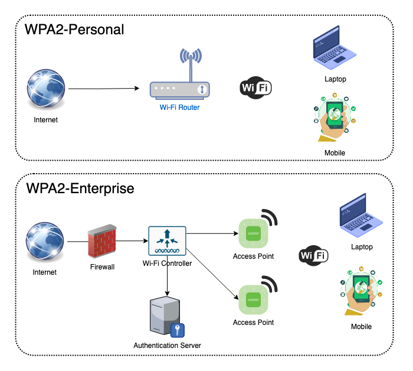

3. Servidor de autenticación Radius
1. Servidor RADIUS
RADIUS siguiendo el modelo cliente/servidor que integra toda la política AAA (Authentication, Authorization and Accounting) en la gestión del acceso a una red y a sus servicios.
El uso de un servidor RADIUS resuelve alguno de los inconvenientes del uso de la encriptación basada en claves compartidas en las redes Wifi:
- Todos los usuarios usan la misma clave.
- No se puede especificar restricciones de uso de los distintos recursos.
- No se puede especificar distintos privilegios para usuarios diferentes.
- El mal uso de la clave por parte de un usuario puede suponer el cambio de contraseña para el resto de usuarios.
- No se puede llevar un registro de las actividades de los usuario.
1.1 Autenticación remota de usuarios Radius
La autenticación remota, permite centralizar una base de datos común para todos los servicios de una organización. Se podrá mejorar la seguridad de la red ya que estos accesos se realizan de manera cifrada.
Además, permite aplicar restricciones de acceso a usuarios concretos. Un ejemplo de software es FreeRadius.
1.2 Autenticación WPA2 basada en Radius
Se basa en agregar otra capa de seguridad cuando sus usuarios se conecten a una red inalámbrica. Utilizan el estándar IEEE 802.1x, que utiliza la estructura EAP (Protocolo de Autenticación Extensible).
Las versiones WPA Enterprise son mucho más seguras que las WPA PSK ya que primero deben configurar el método de autenticación correcto y luego realizan la autenticación con sus propias credenciales empresariales, evitando así conectarse simplemente con una clave compartida que conozcan los usuarios.
WPA2-Personal vs WPA2-Enterprise
WPA2 es el protocolo de seguridad más común y popular en la actualidad. Hay dos variaciones de WPA2:
- WPA2-Personal y WPA2-Enterprise.
Ambos utilizan un método de encriptación fuerte llamado AES-CCMP para cifrar los datos y transmitirlos a través de la red inalámbrica. La principal diferencia entre estos dos modos es el método de autenticación que utilizan.
WPA2-Enterprise utiliza los estándares de autenticación IEEE 802.1x que brinda autenticación de nivel empresarial y está diseñado específicamente para organizaciones y WPA2-Personal utiliza claves precompartidas (PSK) que están diseñadas para uso doméstico.
Además, hay otra diferencia clave: WPA2-Personal, no utiliza un servidor de autenticación para la autenticación, es decir, no requiere una gran infraestructura, pero WPA2-Enterprise requiere un servidor de autenticación que proporcione EAP (Protocolo de autenticación extensible) seguro para garantizar que la información que se envía al servidor de autenticación esté protegida y también requiere una infraestructura, por ejemplo: Servidor Radius.

Figura 1. Comparativa de Wifi WAP2 Enterprise con WAP2 Personal. -Fuente.
Obra publicada con Licencia Creative Commons Reconocimiento No comercial Compartir igual 4.0